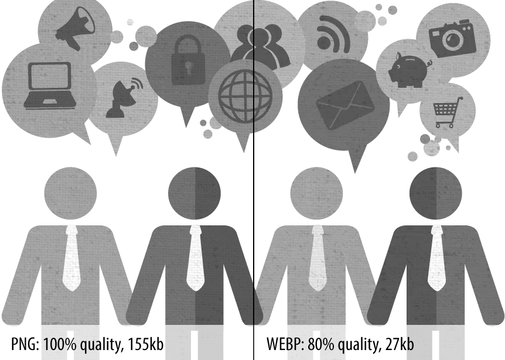

Знакомимся с WebP
WebP — формат изображений, созданный в 2010 году и развиваемый компанией
Google. Этот формат обеспечивает сжатие изображений как с потерями, так и
без потерь. Некоторые крупные компании, такие как Google, Facebook и eBay,
советуют использовать данный формат для сжатия изображений.
В настоящее время просмотр изображений в формате WebP поддерживается
браузерами Google Chrome (начиная с 9 версии), Opera (начиная с версии
11.10) и Firefox (с версии 65). Начиная с версии 26 также поддерживается
браузером Pale Moon.
Android поддерживает чтение и запись WebP изображений начиная с версии 4.0
С помощью специальной JavaScript-библиотеки возможно отображение в
браузерах, поддерживающих видео в формате WebM, в частности, в Firefox 4.0
и более новых. Существует также порт библиотеки libwebp под названием
libwebpjs/libwebpas на JavaScript и ActionScript, позволяющий использовать
WebP во всех популярных браузерах (поддержка IE6+ осуществляется с помощью
дополнительного модуля Adobe Flash). Просмотрщик изображений IrfanView при
условии установки специального плагина также поддерживает WebP и может
преобразовывать его в другие графические форматы. В октябре 2018 поддержка
формата была добавлена в Microsoft Edge. Также в октябре 2018, библиотека
libwebp была принята в кодовую базу Firefox.[17] Главная причина, почему
начали внедрять WebP — уменьшения размера файла.
Согласно Google:
WebP сжимает изображения без потерь на 26% лучше, чем PNG.
WebP сжимает изображения с потерями лучше, чем JPEG на 25-34% при
одинаковом индексе структурного сходства (SSIM)
WebP поддерживает прозрачность без потерь (известную, как альфа-канал) при
увеличении размера всего лишь на 22%.
Тесты показали преимущества и недостатки формата изображений WebP:
Преимущества:
Недостатки:
Качество изображений:
WebP использует новый алгоритм сжатия, поэтому искажение (т.е. деформация
и ухудшение качества) выглядят иначе относительно других типов файлов.
WebP оставляет четкие края фотографии, но при этом ухудшается детализация
и текстура, что неизбежно при сжатии с потерями. В то время как
сопоставимый JPEG-файл показывает дрожание на сплошных участках
изображения, WEBP может похвастаться гладкими переходами даже на самых
низких настройках качества. Недостаток этого в том, что лица людей могут
выглядеть пластиковыми или постеризированными при низкой настройке
качества.
Есть еще пара особенностей формата WebP. Настройки сжатия не повторяют в точности таковые в JPEG. Не стоит ожидать, что 50%-качество JPEG будет соответствовать 50%-качеству WebP. В случае в WebP качество падает довольно стремительно, так что начинать лучше с наибольших значений и постепенно их уменьшать. Другой плюс в пользу WebP — способность добавлять маску альфа-канала, прямо как в PNG. В отличии от конкурирующего формата, изображение формата WebP вы можете сжать до одной десятой размера изображения в формате PNG. Это действительно то, чем выделяется WebP. Один пример из жизни: файл PNG размеров 880Кб (24-битное изображение с альфа-каналом) было сжато до 41Кб — сжатие в 95%! Хоть это и не обычная ситуация, но возможности WebP видны налицо.
